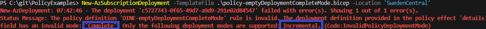

Introduction
Azure policy is a great tool to control your environment, both for auditing purposes and for preventing/mitigating bad configuration of resources. What could happen if your infrastructure/development department however configure an Azure policy wrong? With the intention to tear-down or an attempt to hijack your Azure environment?
In this post, we'll try to see if we can use deployment scripts and other techniques to cause disruptions in our Azure environment.
Deploy empty bicep template to resource group in Complete mode
When reading through Microsoft Learn - Azure policy examples we notice that we can set the deployment mode in our DeployIfNotExists policy effect.
The idea: deploy an empty template using Complete mode via Azure Policy to any/all resource groups, which would delete all existing resources.
targetScope = 'subscription'
resource policy 'Microsoft.Authorization/policyDefinitions@2023-04-01' = {
name: 'DINE-emptyDeploymentCompleteMode'
properties: {
displayName: 'Empty Deployment in Complete mode.'
policyType: 'Custom'
mode: 'All'
description: 'This policy will create an empty deployment in complete mode.'
policyRule: {
if: {
allOf: [
{
field: 'type'
equals: 'Microsoft.Resources/resourceGroups'
}
]
}
then: {
effect: '[parameters(\'effect\')]'
details: {
type: 'Microsoft.Resources/ResourceGroups'
deployment: {
properties: {
mode: 'Complete'
template: {
schema: '...'
resources: []
}
}
}
}
}
}
}
}
The deployment failed! Azure validates that the deployment mode is not set to Complete. This is great! It means we cannot utilize the deployment mode functionality to wipe resources through Azure Policy.
Deployment script with deletion
(Work in progress)
Overprivileged roles
Many of the built-in and community policies which use DeployIfNotExists use overprivileged roles. The role itself will be inherited to your policy set (initiative) and could be used by a policy to gain access.
Policy lifecycle tools
- AzOps
- Enterprise Policy As Code
- Azure landing zone repo